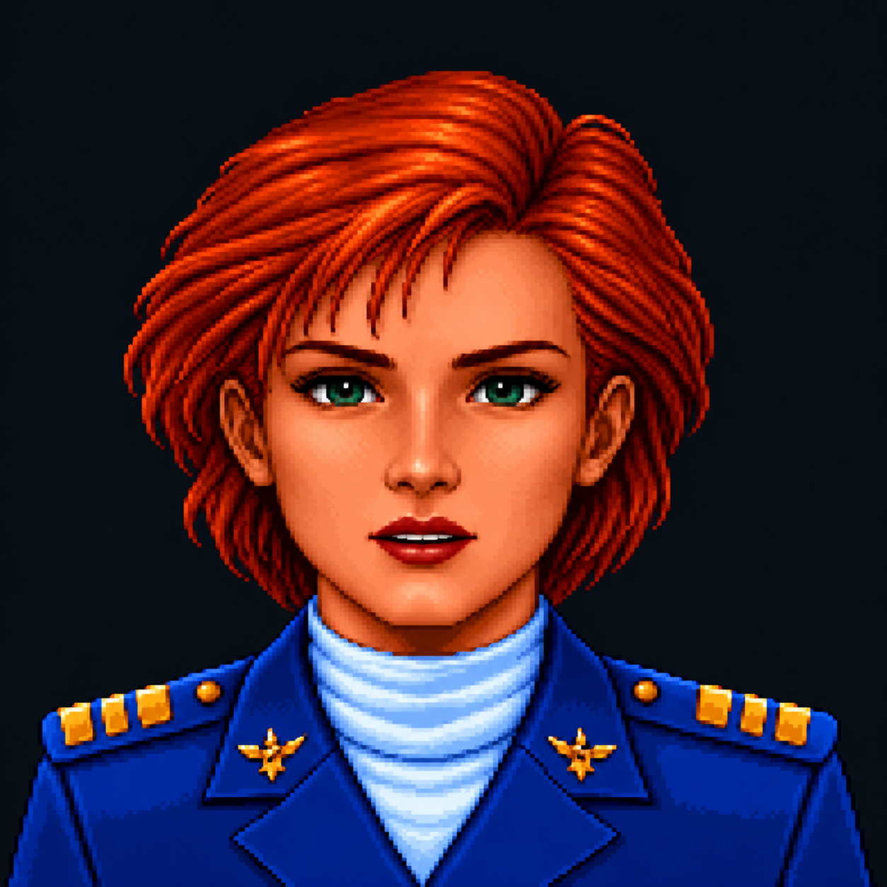

Try the blended talking face with Mumble → · Expression stress test
The left preview holds the master still and blends in only the edited mouth. A soft elliptical mask keeps the lips opaque and fades the surrounding skin to zero. The raw whole-frame swap is beside it for comparison. Both use the same two generated images and timing.

Blending removes the hard patch boundary and keeps changes outside the mouth region out of the animation. It cannot correct a misplaced lip center or a different jaw shape; those still need aligned source frames. Two shapes are a compositing test, not a finished speech animation.
Edit this exact master image. Change only the inner lips and oral opening to a small relaxed EH speaking shape. Keep the original mouth corners, lip center and width fixed; part the lips vertically. Keep the nose, philtrum, chin, cheeks, skin shading, eyes, eyebrows, hair, clothing, lighting, background, dimensions and framing unchanged. No zoom, recentering, smile, face reshaping, palette changes, labels or sprite sheet. Treat every pixel outside the small lip region as locked. Output one full portrait.